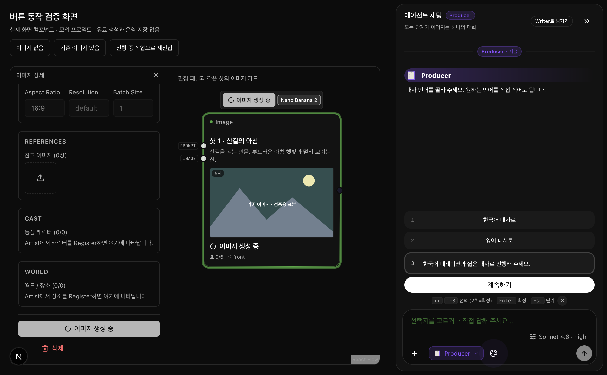
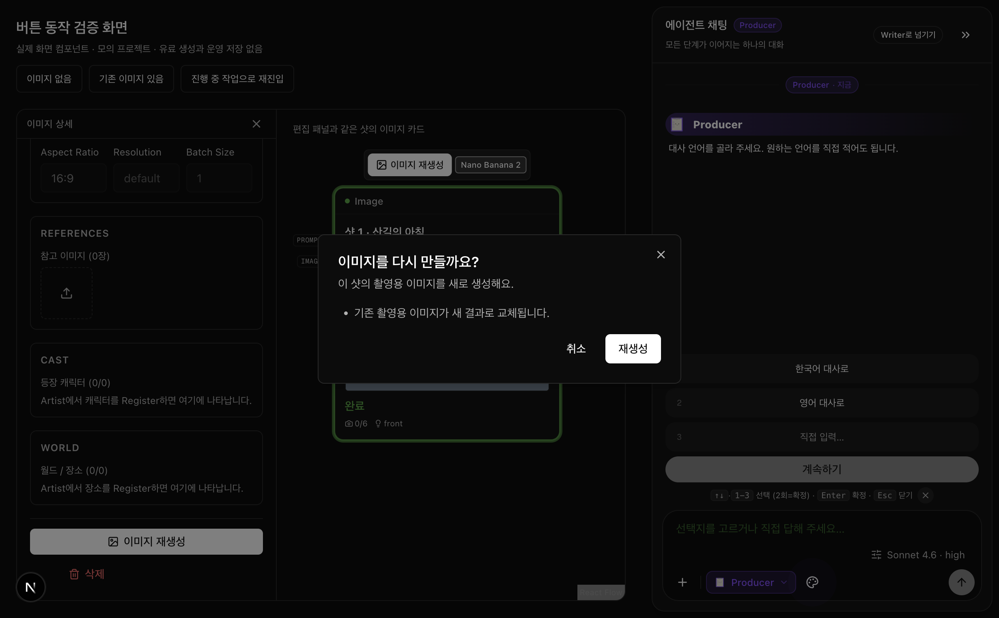
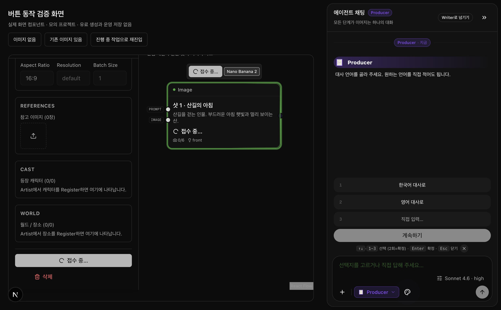
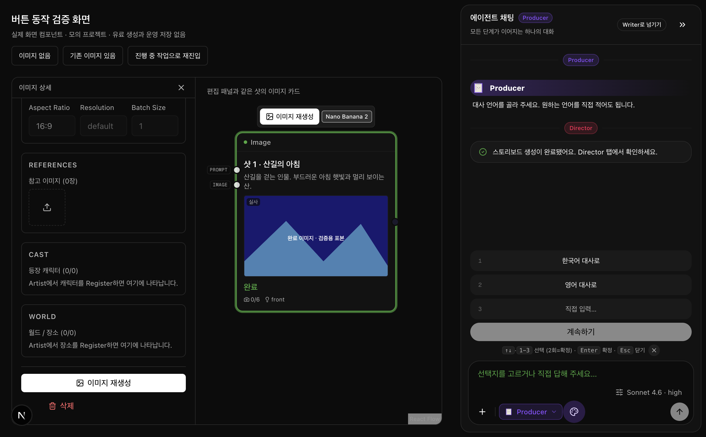
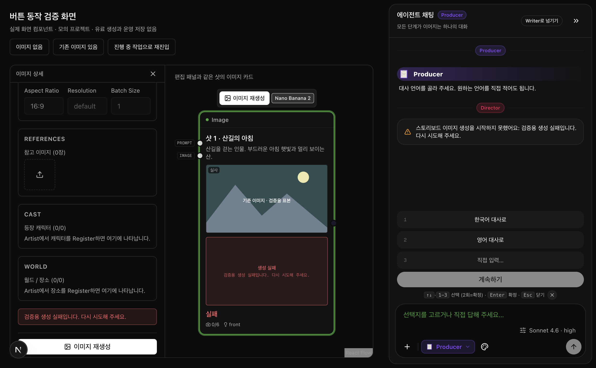
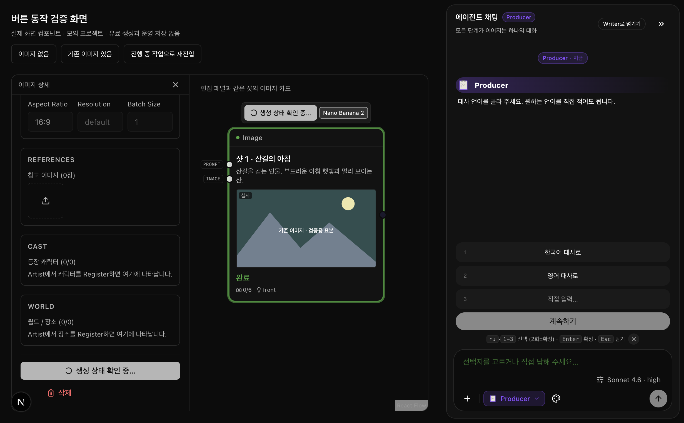
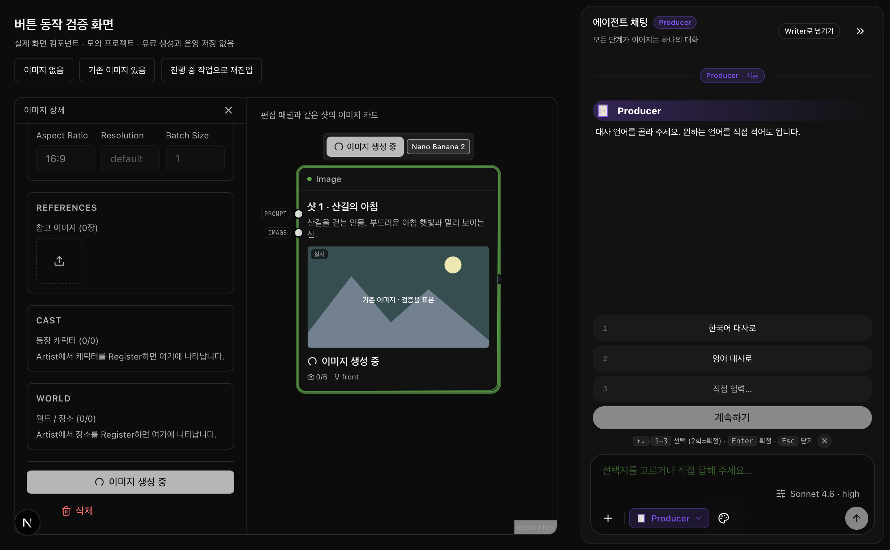
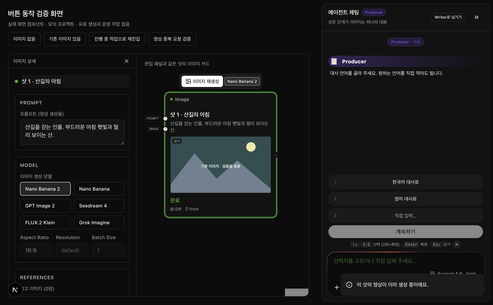

2026-09-14 · 버튼·영상 중복 차감 보완 · 최종 검사 완료
두 버튼 수정과 영상 중복 차감 방지
Director 편집 패널에서 생성 진행 상태를 즉시 보여 주고 중복 클릭을 막았습니다. Producer 선택지 안의 직접 입력은 타이핑하는 즉시 ‘계속하기’가 활성화됩니다.
영상 중복 차감 방지까지 같은 배포에 포함합니다. 수정 전 실제 DB 검증에서는 같은 샷의 동시 요청 두 건으로 총 10 Takes가 잡혔습니다. 수정 후에는 작업 하나에 5 Takes만 잡힙니다. 같은 작업의 차감을 반복해도 추가 차감하지 않으며, 실패와 차감이 엇갈려도 미반환 금액이 남지 않는 것을 확인했습니다.
동작 화면
실제 제품 컴포넌트를 모의 프로젝트와 응답으로 조작한 화면입니다. 유료 AI 생성은 실행하지 않았고, 산 그림은 기존 이미지 보존을 확인하기 위한 표본입니다.

왼쪽과 중앙: 생성 중에는 스피너와 문구를 표시하고 버튼을 잠급니다. 오른쪽: 직접 입력 후 ‘계속하기’가 활성화됩니다. 기존 이미지는 새 결과가 도착할 때까지 유지합니다.

기존 이미지의 재생성은 교체 내용을 확인한 뒤 시작합니다. 취소하면 생성 요청이 나가지 않습니다. 이미지 생성은 Takes 차감 대상이 아니므로 Takes 비용 확인으로 안내하지 않습니다.
접수 직후·완료·실패·재진입 화면 더 보기

클릭 직후 ‘접수 중…’. 1.5초 뒤 여러 화면에서 다시 눌러도 생성 요청은 한 번입니다.

완료하면 새 이미지를 표시하고 다시 생성할 수 있습니다.

서버가 실패를 확정하면 실패를 표시하고 재시도를 허용합니다.

화면에 다시 들어오면 진행 중인 작업이 있는지 확인할 때까지 생성 버튼을 잠급니다.

서버에서 진행 작업을 찾으면 생성 중 표시를 되살립니다. 새 생성 요청은 보내지 않습니다.

같은 샷의 영상이 이미 생성 중이면 안내를 표시하고 현재 작업을 다시 확인합니다. 추가 영상 카드는 남기지 않습니다. 이 검증 화면은 실제 화면 컴포넌트와 모의 응답을 사용합니다.
같이 정한 것
- 이미지 작업을 접수하거나 생성 중이면 버튼을 잠그고 진행 상태를 보여준다.
왜: 사용자가 무반응으로 받아들여 반복 클릭하지 않도록 합니다.
- 직접 입력에 공백 외 글자가 있으면 계속하기 버튼을 활성화한다.
왜: 입력했는데도 진행할 수 없는 것처럼 보이는 문제를 없앱니다.
- 직접 입력을 비우면 계속하기 버튼을 비활성화한다.
왜: 빈 답변은 보내지 않습니다.
- 직접 입력에서 버튼을 누르거나 Enter를 누르면 같은 내용을 한 번만 전송한다.
왜: 입력 방법에 따라 진행 가능 여부가 달라지지 않도록 합니다.
- 같은 작업의 같은 금액을 두 번 요청하면 한 번만 차감한다.
왜: 반복 클릭이나 응답 재전송으로 같은 작업의 비용이 늘어나지 않도록 합니다.
- 다른 창에서 같은 샷의 영상을 동시에 생성하면 한 작업만 접수하고 차감도 그 작업만 한다.
왜: 새 테이크·재생성·일괄 생성이 겹쳐 두 작업이 만들어지는 것을 막습니다.
혼자 정한 것
| 동작 | 왜 | 선택하지 않은 동작 | 되돌리기 |
|---|
| 기존 이미지를 다시 만들면 교체 확인 후 생성한다. | 이미지를 바꾸는 의도를 확인합니다. 최초 생성은 바로 시작합니다. | 모든 생성에 비용 확인창 표시 | 쉬움 |
| 응답을 잃으면 자동 재제출하지 않고 생성 상태를 다시 확인한다. | 서버에서 이미 생성하고 있을 수 있습니다. | 응답 오류를 모두 실패로 간주하고 즉시 재제출 | 쉬움 |
| 직접 추가한 이미지의 접수 여부가 불명확하면 다시 생성 안내를 확인한 뒤에만 새 요청을 보낸다. | 이 샷은 서버 작업 번호로 결과를 복구할 수 없어 명시적인 재시도가 필요합니다. | 영구 잠금 또는 자동 재시도 | 쉬움 |
| 개별·일괄·다른 탭에서 같은 샷 이미지를 동시에 요청하면 진행 작업 하나로 합친다. | 화면의 버튼 잠금만으로는 다른 탭의 요청을 막을 수 없습니다. | 화면에서만 중복 클릭 차단 | 쉬움 |
| 기존 일괄 이미지 작업을 기다리면 요청한 샷의 이미지만 반영하고 완료를 알린다. | 일괄 작업의 첫 번째 이미지가 다른 샷에 표시되지 않도록 합니다. | 일괄 작업의 대표 이미지를 그대로 사용 | 쉬움 |
| 이미지 생성 중 프로젝트를 바꾸면 이전 결과를 새 프로젝트에 저장하지 않는다. | 다른 프로젝트로 작업이 섞이지 않도록 합니다. | 응답이 도착한 시점의 프로젝트에 저장 | 쉬움 |
| 이미 반환한 작업이거나 최초 차감 전에 실패·취소·완료되었으면 새로 차감하지 않는다. | 늦게 도착한 요청이 반환 이후 비용을 다시 잡지 않도록 합니다. 실패 후 새 작업을 만드는 것은 허용합니다. | 종료된 작업에도 새 차감 허용 | 쉬움 |
| 같은 작업에 다른 금액이나 다른 작업공간을 요청하면 추가 차감 없이 거절한다. | 동일 작업을 빌려 추가 차감하는 일을 막습니다. | 변경된 금액을 추가 차감 | 쉬움 |
| 반환을 여러 번 요청하면 최초 차감 총량까지만 반환한다. | 실패 알림이 겹치거나 예전 중복 차감이 있을 때 미반환 총액을 정확히 돌려줍니다. 기존 고객 기록을 자동 수정하지 않습니다. | 반환마다 반복 지급하거나 중복 차감 일부만 반환 | 쉬움 |
| 다른 요청이 같은 샷의 영상을 생성 중이면 기존 완료 영상을 유지하고 실패로 표시하지 않는다. | 새 요청이 접수되지 않았다는 이유로 이전 영상을 실패로 바꾸지 않습니다. | 이전 카드를 실패로 표시 | 쉬움 |
전체 한국어 검사 문장과 이유는 동작 목록에 있습니다.
Takes 검증 결과
| 상황 | 수정 전 | 수정 후 |
|---|
| 같은 작업에 5 Takes 차감을 동시에 두 번 요청 | 총 10 Takes | 총 5 Takes |
| 다른 요청으로 같은 샷의 영상을 동시에 생성 | 두 작업 · 총 10 Takes | 한 작업 · 총 5 Takes |
| 새 테이크와 재생성, 서로 다른 테이크의 재생성 충돌 | 두 작업 허용 | 진행 중 한 작업 허용 |
| 실패·반환과 늦은 차감이 겹침 | 5 Takes가 반환되지 않은 채 남음 | 미반환 0 Takes |
| 과거 중복 차감 20 중 6 반환 후 다시 반환 요청 | 4만 추가 반환 | 미반환 14 반환 |
| 이전 작업 완료·실패 후 새 테이크 생성 | 허용 | 계속 허용 |
| 서로 다른 샷의 동시 영상 생성 | 각각 허용 | 계속 각각 허용 |
차감·반환 검증은 보완 전 20개 중 17개 실패에서 보완 후 20개 통과로 바뀌었습니다. 영상 접수 검증은 11개 모두 통과했습니다. 차감·반환 보완과 영상·이미지 접수 방어를 같은 공간에 함께 적용한 통합 검사도 11개 모두 통과했습니다. 실제 개발 DB 안의 임시 공간에 합성 작업과 잔액을 넣고 실행했으며, 유료 AI 생성은 호출하지 않았습니다. 기존 고객의 중복 차감 사고를 조회하거나 자동 환불한 작업은 아닙니다.
차감·반환 검증 · 수정 전 감사 결과
검증 및 배포 상태
전체 자동 테스트 3,194개 통과, 기존 조건부 건너뛰기 27개. 분리된 체크아웃에는 로컬 로그 표본이 없어 기존 검사 5개가 추가로 건너뛰어졌습니다. 타입 검사·디자인 검사·빌드 통과. 수정 파일 검사 오류 0개, 기존 경고 2개. 별도로 실제 DB에서 이미지 동시성 4개, 영상 동시성 11개, 차감·반환 20개 검증을 통과했습니다.
버튼 및 영상 중복 안내는 실제 컴포넌트와 모의 프로젝트로 확인했습니다. 영상 API의 중복 접수 경로에서 추가 차감과 외부 생성 호출이 모두 0회인 것도 검사했습니다. 임시 검증 페이지는 제품에서 제거했습니다.
영상 이중 차감 보완까지 묶어 배포하라는 요청에 따라 개발 DB 적용, 메인 배포, 운영 DB 적용을 진행합니다. 배포 후 확인 결과는 별도 배포 기록에 남깁니다.